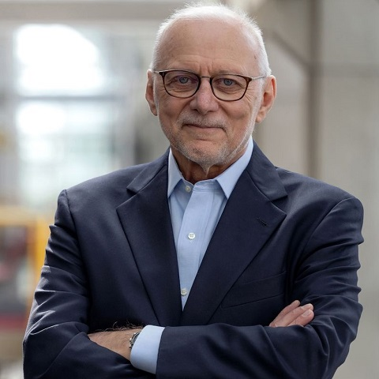
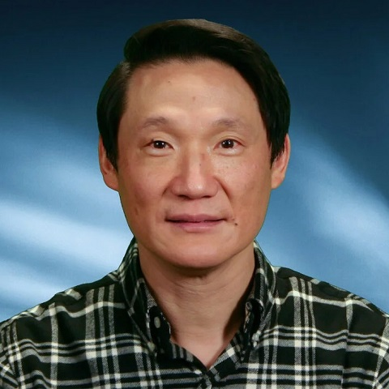

About
LLM+Graph:
Large Language Models (LLMs) have seen rapid development such as ChatGPT and LLaMA, and have received tremendous attention from both industry and academia. While they have shown remarkable success over text data, recent works have demonstrated their limitations in reasoning with structured data including graphs. Graph-structured data is ubiquitous in the real world ranging from social and biological networks to financial transactions, knowledge bases, and transportation systems -- they permeate our daily lives. Therefore, understanding how to utilize graph data optimally with LLMs is a crucial research question. Recently, exploring the synergy between graphs and LLMs are attracting increasing interest in the data management and AI communities. On one hand, LLMs can be enhanced with graph computing techniques to provide answers with more contextualized facts, e.g., graph-based retrieval-augmented generation (graph RAG). On the other hand, downstream tasks, e.g., knowledge graph (KG) construction, graph data management and mining can also benefit by adopting LLMs, such as via LLM-graph DB (graph databases) and LLM-GNN (graph neural network) collaborations. It is, therefore, a timely opportunity to explore effective ways of interactions between LLMs and graph data. Our workshop “LLM+Graph” targets data management and data science researchers, aiming to inspect effective algorithms and systems to bringing LLMs, graph data management, and graph ML together in real applications.
Call for Papers
We solicit unpublished papers discussing issues and successes under the broad category of Graph Data for LLMs, and LLMs for Graphs in the following areas (and beyond):
Graph-enhanced Pre-training
Graph-enhanced Fine-tuning
Graph-enhanced Inference
Graph-enhanced Refiners and Validators
LLM-enhanced Graph Querying
LLM-enhanced Graph Mining
LLM-enhanced Graph Learning
Additionally, the paper must have a clear data management focus, e.g., discussing data management solution(s) such as (but not limited to):
Data and Input Modeling for LLM+Graph
Data Cleaning, Integration, and Augmentation with LLM+Graph
Vector Data Management for LLM+Graph
Accuracy and Consistency of LLM+Graph
Explainability and Provenance of LLM+Graph
Security and Privacy for LLM+Graph
Benchmarking and Ground Truth for LLM+Graph
Submission Details:
We solicit and select five types of papers
Survey Papers: these papers survey the related work in specific sub-areas and lay out the agenda for future work.
Regular Research Papers: these are research papers with different flavors including foundations, algorithms, systems, information system architectures, experimental benchmarking, and applications. Papers with new/ late-breaking results are also welcome, which report the newest preliminary results about the most promising problems in the field.
Vision Papers: these papers are devoted to discussing problems that we face currently and anticipate for the future.
Demonstration Papers: these are software demonstration proposals, accompanied by short papers. The paper must describe the demonstrated system, user interface, options for user interactions, the system setup, and state the novelty and significance. We encourage providing the online link of a demonstration video, which is accessible by the reviewers.
Extended Abstract Papers: if your research article has been accepted elsewhere, you are eligible to submit your work in the form of an extended abstract under the short paper category, while citing your previously published article. We encourage you to rephrase when needed or possible to avoid substantial verbatim text overlapping with past accepted/ published materials.
For survey, vision, demonstration, and extended abstract papers, you require to add [Survey], [Vision], [Demo], [Extended Abstract], respectively, next to the paper title, in both CMT submission form and also in the submitted paper pdf. We welcome the papers that fall under short papers of at most 6 pages and long papers up to 12 pages, including bibliography. Submissions must use the template at: vldb-workshop-style-master.zip. All submissions must be submitted in PDF through: https://cmt3.research.microsoft.com/LLMG2025/. Submissions will be reviewed in a single-blind manner, and all author names and affiliations should be included. Papers that do not follow the guidelines or are not within the scope of relevant topics will be desk rejected. We also expect that publications from DB venues, e.g., SIGMOD/VLDB/ICDE/EDBT etc. are cited. Submissions will be reviewed by at least three members of the Program Committee. All accepted papers will be published in VLDB workshop proceedings. The workshop will be in-person and at least one author of each accepted paper is required to register.
Important dates
Paper submission deadline: May 27, 2025 (23:59 AOE)
Notification of Acceptance: July 2, 2025 (23:59 AOE)
Camera-ready version due: July 11, 2025 (23:59 AOE)
Workshop at VLDB 2025: September 1, 2025
Accepted Papers
Accepted Paper List:
LLM-assisted Construction of the United States Legislative Graph
Francesco Cambria, Andrea Colombo
Scalable Graph-based Retrieval-Augmented Generation via Locality-Sensitive Hashing
Fangyuan Zhang, Zhengjun Huang, Yingli Zhou, Qingtian Guo, Wensheng Luo, Xiaofang Zhou
LLM-Hype: A Targeted Evaluation Framework for Hypernym-Hyponym Identification in Large Language Models
Qiu Ji, Pengfei Zhu, Haolei Zhu, Yang Sheng, Guilin Qi, Lianlong Wu, Kang Xu, Yuan Meng
Graph-Enhanced Large Language Models for Spatial Search [Vision]
Nicole Schneider, Kent O'Sullivan, Hanan Samet
xpSHACL: Explainable SHACL Validation using Retrieval-Augmented Generation and Large Language Models
Gustavo Publio, Jose Emilio Labra Gayo
Automatic Prompt Optimization for Knowledge Graph Construction: Insights from an Empirical Study
Nandana Mihindukulasooriya, Niharika DSouza, Faisal Chowdhury, Horst Samulowitz
Towards the Next Generation of Agent Systems: From RAG to Agentic AI [Vision]
Yingli Zhou, Shu Wang
Program
The workshop will be held at September 1st.
Session 1:
Opening Remarks
Co-Organizers: Yixiang Fang, Arijit Khan, Tianxing Wu, Da Yan
Keynote 1: Exploring the Duality Between Large Language Models and Database Systems
M. Tamer Özsu (University of Waterloo)
Industry Talk 1: Applications and Challenges of GraphRAG and Graph Foundation Models
Cheng Chen (ByteDance)
Paper 1: LLM-assisted Construction of the United States Legislative Graph
Paper 2: Scalable Graph-based Retrieval-Augmented Generation via Locality-Sensitive Hashing
Morning Break
Session 2:
Keynote 2: Towards Graph Foundation Models with Riemannian Geometry
Philip S. Yu (University of Illinois, Chicago)
Industry Talk 2: Retrieval and Reasoning with LLMs on Neo4j: Progress and Challenges
Brian Shi (Neo4J)
Paper 3: LLM-Hype: A Targeted Evaluation Framework for Hypernym-Hyponym Identification in Large Language Models
Paper 4: Graph-Enhanced Large Language Models for Spatial Search [Vision]
Lunch
Session 3:
Keynote 3: Reasoning over Property Graphs: Leveraging Large Language Models for Automated Data Consistency
Angela Bonifati (Lyon 1 University)
Industry Talk 3: Chat2Graph: A Graph Native Agentic System
Heng Lin (AntGroup)
Paper 5: xpSHACL: Explainable SHACL Validation using Retrieval-Augmented Generation and Large Language Models
Paper 6: Automatic Prompt Optimization for Knowledge Graph Construction: Insights from an Empirical Study
Afternoon Break
Session 4:
Paper 7: Towards the Next Generation of Agent Systems: From RAG to Agentic AI [Vision]
Panel: the panelist members are to be decided.
Invited Speakers
Keynote Speakers:

M. Tamer Özsu
University of Waterloo, Canada

Philip S. Yu
University of Illinois at Chicago, US
Organization
Workshop Co-Chairs:
Yixiang Fang
The Chinese University of Hong Kong, Shenzhen, China
Arijit Khan
Aalborg University, Denmark
Tianxing Wu
Southeast University, China
Da Yan
Indiana University Bloomington, US
Program Committee Members:
Cuneyt Akcora (University of Central Florida)
Naheed Anjum Arafat (Howard University)
Ariful Azad (Texas A&M University)
Sheng Bi (Southeast University)
Lei Cao (University of Arizona)
Joydeep Chandra (Indian Institute of Technology Patna)
Lijun Chang (The University of Sydney)
Yubo Chen (Institute of Automation, Chinese Academy of Sciences)
Rainer Gemulla (Universität Mannheim)
Guimu Guo (Rowan University)
Xin Huang (Hong Kong Baptist University)
Jiahui Jin (Southeast University)
Longbin Lai (Alibaba Corporation)
Wolfgang Lehner (TU Dresden)
Cheng Long (Nanyang Technological University)
Chenhao Ma (The Chinese University of Hong Kong, Shenzhen)
Chuangtao Ma (Aalborg University)
Yudong Niu (Singapore Management University)
Peng Peng (Hunan University)
Lu Qin (University of Technology Sydney)
A. Erdem Sariyuce (University at Buffalo)
Juan Sequeda (data.world)
Jieming Shi (The Hong Kong Polytechnic University)
Yihan Sun (University of California, Riverside)
Kai Wang (Shanghai Jiao Tong University)
Meng Wang (Tongji University)
Dong Wen (University of New South Wales)
Yinglong Xia (Meta)
Shiyu Yang (Guangzhou University)
Long Yuan (Wuhan University of Technology)
Yuanyuan Zeng (Chinese University of Hong Kong, Shenzhen)
Yanfeng Zhang (Northeastern University)
Fan Zhang (Guangzhou University)
Yingli Zhou (The Chinese University of Hong Kong, Shenzhen)
Rong Zhu (Alibaba Group)